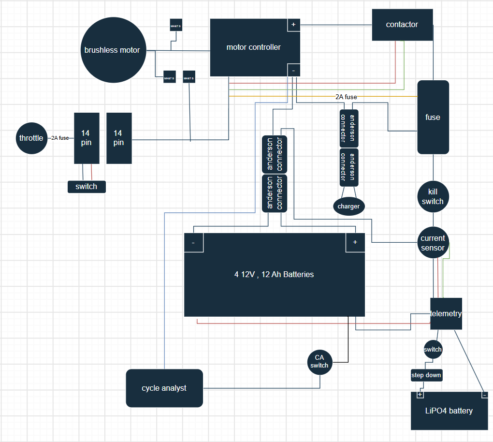
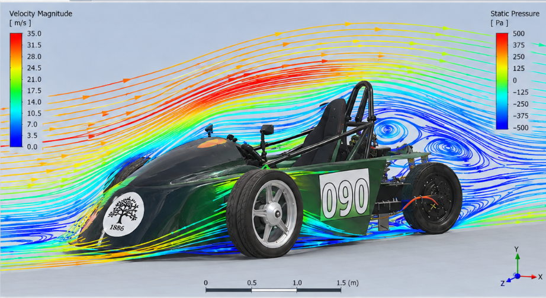
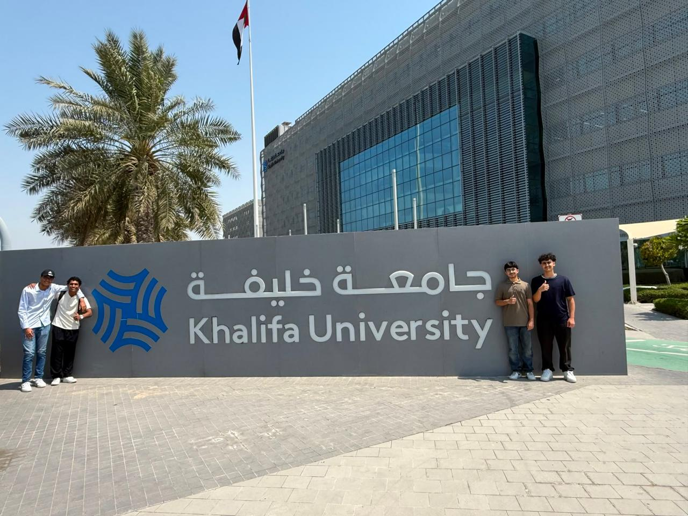
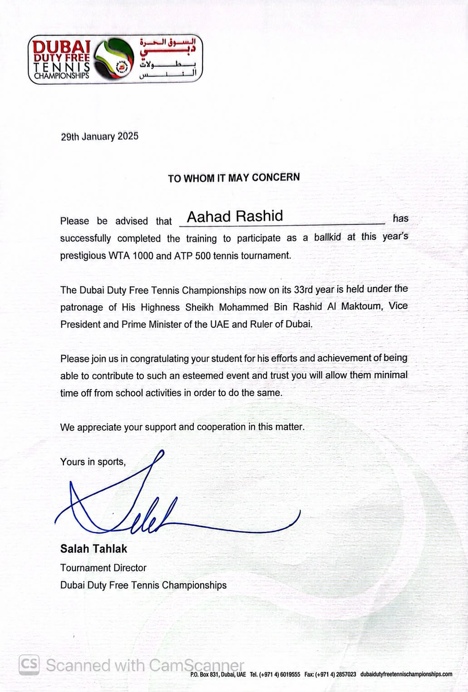
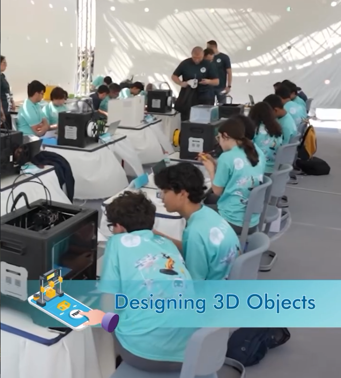
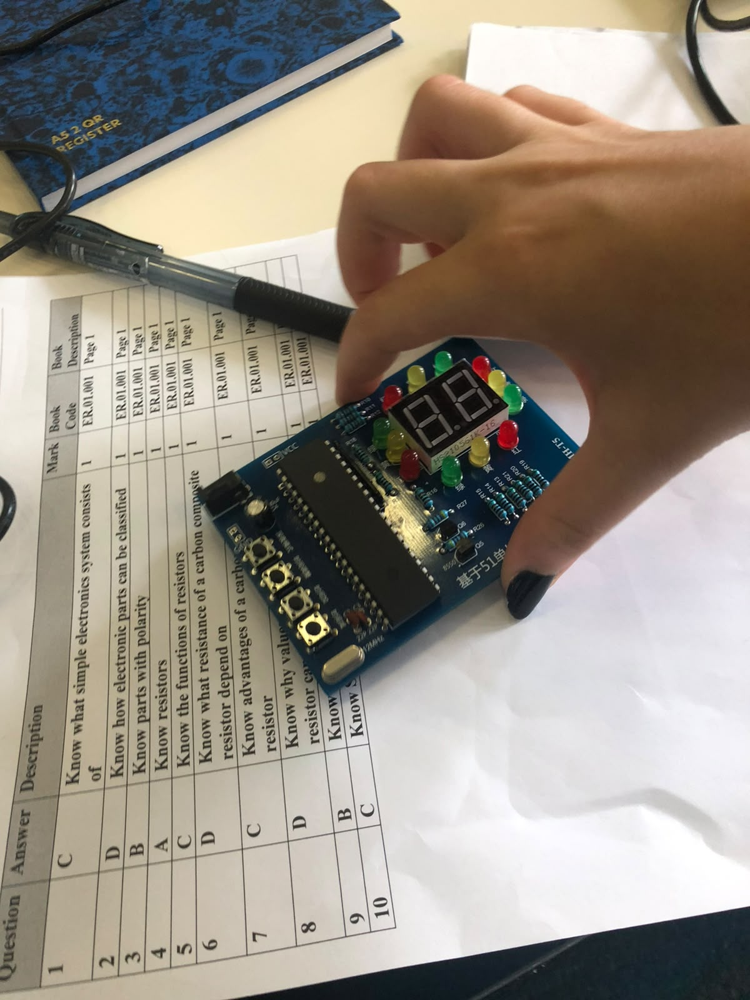

PROJECT LIBRARY
Projects.
Find a case study by topic, or search for a system, skill or activity.

EV Grand Prix Electric Race Car
An electric endurance car built and raced through electrical integration, telemetry, design, testing and team leadership.
View project
EV Electrical & Powertrain
The 48 V traction system, protection path, battery strategy and fault repairs behind the race car.
View project
EV Telemetry System
Vehicle measurement work and a finalized ESP32-C3 / Raspberry Pi architecture planned for the 2027 car.
View project
EV CAD & Reverse Engineering
Scanning the existing race car, then revising its digital body shape for a more streamlined design.
View project
EV Mechanical Design & Testing
Packaging, material choices, airflow study and repeatable fault-finding on the electric race car.
View project
ADNOC Energy Bootcamp and Work Placement
Industry exposure to oil and gas operations, laboratory testing, safety and quality control.
View project
MBZUAI Hybrid Intelligence Bootcamp
Applied AI learning and an accessible learning website for children with disabilities.
View project
QER Generator Repair Internship
Hands-on learning in generator maintenance, electrical and mechanical components, testing and fault diagnosis.
View project
Khalifa University Job Shadowing
A closer look at engineering research, laboratories and university-level technical work.
View projectInnovAIte Hackathon
A team-built AI concept developed and presented under hackathon conditions.
View project
Robotics Mentoring
Guiding younger students through robot design, coding, testing and competition preparation.
View project
VEX V5 High Stakes Robotics
Leading a seven-member team through VEX V5 design, construction, programming and field testing.
View projectStudent Hackathon Organization
Coordinating participants, activities, scheduling and event logistics for a student hackathon.
View projectUAE Hackathon Team
Researching and designing a technology-based solution for the official UAE Hackathon.
View projectSABIS Stars SOS Crash Detection Box
An SOS crash-detection box designed for an international school competition.
View project
Dubai Duty Free Tennis Championships Volunteer
Supporting live match operations as a selected ball kid volunteer.
View project
3D Printing and Modelling
Leading a student team through CAD, slicing, printing, testing and design iteration.
View project
Circuits and Electronics
Building and testing circuits with breadboards, components, soldering and fault diagnosis.
View projectNo projects match that search. Try a different term or category.